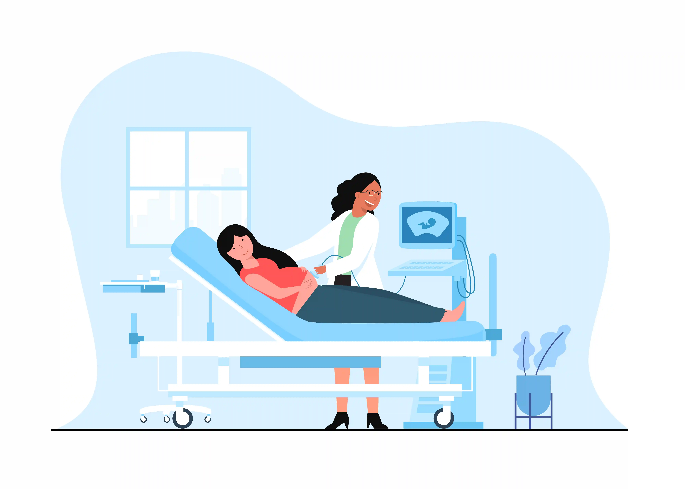

Safe Normal Delivery vs. C-Section: Expert Maternity Care at Gani Hospitals, Ramnad
Choosing between normal delivery and caesarean section is one of the most important decisions expectant mothers face. At Gani Hospitals — the best maternity hospital Ramanathapuram — our experienced best gynecologist in Ramanathapuram team guides every mother through this journey with expert care, ensuring the safest outcome for both mother and baby.

Introduction: Understanding Your Delivery Options
Pregnancy is a transformative journey, and choosing the right place for pregnancy care near me can make all the difference. Whether you're searching for a gynecologist near Ramanathapuram bus stand or exploring delivery packages near me, understanding the differences between normal vaginal delivery and caesarean section (C-section) empowers you to make informed decisions.
At Gani Hospitals — recognized as the best maternity hospital Ramanathapuram — we believe every mother deserves personalized care. Our best gynecologist in Ramanathapuram team evaluates each pregnancy individually, recommending the safest delivery method based on medical assessment rather than convenience.
This comprehensive guide covers everything you need to know about normal delivery vs. C-section, normal delivery cost in Ramnad, painless labor Ramnad options, and why families across the district trust our maternity hospital in Ramanathapuram for their most precious moments.
What Is Normal Vaginal Delivery?
Normal vaginal delivery is the natural process where a baby is born through the birth canal without surgical intervention. It is the method nature intended and, when medically appropriate, offers significant benefits for both mother and child. At our maternity hospital in Ramanathapuram, we actively encourage and support normal delivery whenever it is safe.
The process involves three stages: labor (cervical dilation), delivery (baby's passage through the birth canal), and placental delivery. Our Gani Hospitals women's health team monitors each stage carefully, ensuring timely intervention only when necessary.
Benefits of Normal Delivery
- Faster recovery — most mothers can walk within hours and return home in 24–48 hours
- Lower infection risk — no surgical wound means reduced chance of infection
- Better for baby's lungs — passage through the birth canal helps clear fluid from lungs
- Immediate bonding — skin-to-skin contact and breastfeeding can begin immediately
- Healthy gut bacteria — baby acquires beneficial bacteria during vaginal birth
- Lower cost — the normal delivery cost in Ramnad at Gani Hospitals is significantly more affordable than C-section
- Shorter hospital stay — our delivery packages near me reflect the economical nature of normal delivery
- No surgical risks — avoids anesthesia complications and surgical scarring
When mothers ask about pregnancy care near me that prioritizes natural birth, our best gynecologist in Ramanathapuram team at Gani Hospitals is committed to supporting their choices while ensuring safety.
What Is a Caesarean Section (C-Section)?
A caesarean section is a surgical procedure where the baby is delivered through an incision in the mother's abdomen and uterus. While it is a major surgery, C-section can be life-saving when vaginal delivery poses risks to mother or baby. Our best maternity hospital Ramanathapuram is fully equipped for both planned and emergency C-sections.
At Gani Hospitals, C-sections are performed only when medically indicated — never for convenience or to inflate bills. Our transparent delivery packages near me ensure families understand all costs upfront.
When Is C-Section Recommended?
- Fetal distress — baby showing signs of oxygen deprivation
- Abnormal positioning — breech (feet first) or transverse (sideways) presentation
- Placenta previa — placenta blocking the cervix
- Cord prolapse — umbilical cord descending before the baby
- Prolonged labor — labor not progressing despite interventions
- Multiple pregnancies — twins or triplets in certain positions
- Previous C-section — in some cases, based on scar evaluation
- Maternal health conditions — severe hypertension, heart disease, or active infections
- Large baby (macrosomia) — baby too large for safe vaginal delivery
Every pregnancy checkup Ramnad at Gani Hospitals includes thorough assessment to identify any factors that might indicate the need for C-section, allowing time for preparation and counseling.
Normal Delivery vs. C-Section: Complete Comparison
Understanding the key differences between normal delivery and C-section helps expectant mothers make informed decisions. Here's a comprehensive comparison from our Gani Hospitals women's health team:
| Factor | Normal Delivery | C-Section |
|---|---|---|
| Recovery Time | 24–48 hours hospital stay; full recovery in 2–4 weeks | 3–4 days hospital stay; full recovery in 6–8 weeks |
| Pain During Delivery | Labor pain; painless labor Ramnad options available with epidural | No labor pain; post-surgical pain for several days |
| Cost | Lower normal delivery cost in Ramnad | Higher due to surgery, anesthesia, longer stay |
| Infection Risk | Lower | Higher (surgical site infection possible) |
| Future Pregnancies | No restrictions | May require C-section again; risks increase with multiple C-sections |
| Breastfeeding Initiation | Immediate | May be delayed due to anesthesia effects |
| Baby's Health | Better lung function; exposure to beneficial bacteria | Slightly higher risk of respiratory issues initially |
| Scarring | None or minimal (perineal) | Abdominal surgical scar |
| When Preferred | Low-risk pregnancies; mother's preference with no contraindications | High-risk cases; emergencies; specific medical indications |
At our maternity hospital in Ramanathapuram, we discuss these factors during every pregnancy checkup Ramnad appointment, ensuring mothers are fully informed about their options.
Painless Labor in Ramnad: Modern Pain Management Options
Many expectant mothers hesitate about normal delivery due to fear of labor pain. At Gani Hospitals, we offer painless labor Ramnad through modern pain management techniques, making vaginal delivery a comfortable experience.
Epidural Analgesia — The Gold Standard
Epidural is the most effective method for painless labor Ramnad. Our trained anesthesiologists administer medication through a small catheter in the lower back, blocking pain signals from the uterus and birth canal while allowing the mother to remain fully alert and participate in the delivery.
- Pain relief — reduces labor pain by 80–90%
- Consciousness maintained — mother remains awake and aware
- Controlled dosing — can be adjusted throughout labor
- Safe for baby — minimal medication reaches the baby
- Movement possible — "walking epidurals" allow some mobility
Other Pain Management Options
- Entonox (gas and air) — inhaled pain relief during contractions
- IV analgesics — injectable pain medication
- TENS — transcutaneous electrical nerve stimulation
- Hydrotherapy — warm water immersion during early labor
- Breathing techniques — coached relaxation methods
Our best gynecologist in Ramanathapuram team discusses painless labor Ramnad options during pregnancy checkup Ramnad visits, so mothers can make informed choices about pain management. This service is included in our comprehensive delivery packages near me.
Your Complete Pregnancy Care Journey at Gani Hospitals
When you search for pregnancy care near me, you deserve a maternity hospital in Ramanathapuram that provides comprehensive care from conception to postpartum recovery. At Gani Hospitals, our Gani Hospitals women's health department offers a complete range of services.
First Trimester (Weeks 1–12)
- Pregnancy confirmation and dating scan
- Initial pregnancy checkup Ramnad — complete blood work, urine analysis
- First trimester screening (NT scan, double marker test)
- Nutritional counseling and supplement prescription
- Risk assessment by our best gynecologist in Ramanathapuram
Second Trimester (Weeks 13–26)
- Anomaly scan (detailed fetal anatomy assessment)
- Glucose screening for gestational diabetes
- Regular pregnancy checkup Ramnad appointments (monthly)
- Fetal growth monitoring
- Antenatal classes — labor preparation, breastfeeding education
Third Trimester (Weeks 27–40)
- Fortnightly then weekly pregnancy checkup Ramnad visits
- Growth scans and amniotic fluid assessment
- Non-stress tests (NST) for fetal wellbeing
- Birth plan discussion — normal delivery vs. C-section, painless labor Ramnad options
- Review of delivery packages near me and documentation
Delivery & Postpartum
- 24/7 labor room with continuous fetal monitoring
- Experienced best gynecologist in Ramanathapuram team on call
- NICU facility for newborn care if needed
- Lactation support and newborn care education
- Postnatal follow-up as part of Gani Hospitals women's health services
From the first pregnancy checkup Ramnad to holding your baby, our best maternity hospital Ramanathapuram is with you every step.
Why Gani Hospitals Is the Best Maternity Hospital Ramanathapuram

Families across Ramanathapuram, Ramnad district, and surrounding areas choose Gani Hospitals for maternity care because of our commitment to clinical excellence, patient comfort, and transparent pricing.
What Makes Us Different
- Experienced specialists — our best gynecologist in Ramanathapuram team has delivered thousands of babies safely
- 24/7 emergency services — round-the-clock obstetric care for any complication
- Modern labor rooms — equipped for both normal delivery and painless labor Ramnad
- Dedicated operation theatre — fully equipped for emergency and planned C-sections
- NICU facility — neonatal intensive care for premature or unwell newborns
- Affordable packages — transparent normal delivery cost in Ramnad and C-section pricing
- Convenient location — easily accessible gynecologist near Ramanathapuram bus stand
- Family-centered care — comfortable accommodation for attendants
- Complete women's health services — Gani Hospitals women's health covers all gynecological needs beyond maternity
- In-house pharmacy — all medicines available at the hospital
Transparent Delivery Packages at Gani Hospitals
When searching for delivery packages near me, transparency is essential. At our maternity hospital in Ramanathapuram, we offer clear, all-inclusive packages so families can plan financially without hidden surprises.
What's Included in Our Delivery Packages
- Pre-delivery — admission procedures, initial assessment, fetal monitoring
- Delivery charges — labor room, delivery conducted by best gynecologist in Ramanathapuram
- Painless delivery — painless labor Ramnad with epidural (optional add-on)
- Room accommodation — comfortable stay for mother and one attendant
- Newborn care — initial examination, vaccinations, hearing screening
- Nursing care — round-the-clock monitoring and assistance
- Postnatal checkup — follow-up consultation included
Understanding Normal Delivery Cost in Ramnad
The normal delivery cost in Ramnad at Gani Hospitals is designed to be affordable for families across economic backgrounds. Our delivery packages near me are tiered based on room category, with the core medical care remaining excellent across all options.
C-section packages include additional surgical team fees, anesthesia, extended stay, and post-operative care. Our billing team provides detailed estimates during your pregnancy checkup Ramnad visits so you can plan accordingly.
For current pricing on normal delivery cost in Ramnad and C-section packages, contact our maternity hospital in Ramanathapuram directly or visit our gynecologist near Ramanathapuram bus stand for a consultation.
High-Risk Pregnancy Management
Some pregnancies require additional monitoring and specialized care. Our Gani Hospitals women's health department is equipped to manage high-risk cases, ensuring the safest possible outcomes.
Conditions We Manage
- Gestational diabetes — blood sugar management throughout pregnancy
- Pregnancy-induced hypertension & preeclampsia — close monitoring and timely intervention
- Multiple pregnancies — twins and higher-order multiples
- Previous C-section — evaluation for trial of labor (TOLAC) or repeat C-section
- Advanced maternal age — enhanced screening and monitoring for mothers over 35
- Placental abnormalities — placenta previa, accreta spectrum
- Fetal growth restriction — intensive monitoring and delivery planning
- Rh incompatibility — anti-D prophylaxis and monitoring
Early identification during pregnancy checkup Ramnad appointments allows our best gynecologist in Ramanathapuram team to develop customized care plans, ensuring the best maternity hospital Ramanathapuram experience even in complex cases.
Easily Accessible: Gynecologist Near Ramanathapuram Bus Stand
Location matters when choosing pregnancy care near me. Gani Hospitals is strategically located for easy access from across Ramanathapuram town and surrounding areas.
- Central location — gynecologist near Ramanathapuram bus stand makes us easily reachable by public transport
- Ample parking — convenient for families arriving by personal vehicle
- 24/7 emergency access — obstetric emergencies attended immediately
- Ambulance service — available for transport from remote areas
Whether you're a first-time mother seeking pregnancy care near me or looking to switch to a more trusted provider, our maternity hospital in Ramanathapuram welcomes you at any stage of pregnancy.
How to Prepare for Your Delivery
Preparation reduces anxiety and helps delivery go smoothly. Here's what our Gani Hospitals women's health team recommends:
Documents to Carry
- All pregnancy checkup Ramnad reports and scan images
- Blood group card and recent blood test reports
- Photo ID proof and hospital registration documents
- Insurance cards (if applicable)
Hospital Bag Essentials
- Comfortable nightwear and nursing-friendly clothing
- Toiletries and personal care items
- Newborn clothes, diapers, and blankets
- Feeding essentials (breast pads, nursing bra)
- Phone charger and important contact numbers
Mental Preparation
- Attend antenatal classes at our best maternity hospital Ramanathapuram
- Discuss birth preferences with your best gynecologist in Ramanathapuram
- Understand painless labor Ramnad options available
- Review delivery packages near me and complete paperwork in advance
- Plan transport and notify family members of the expected due date
Related Services at Gani Hospitals, Ramanathapuram
Our Gani Hospitals women's health services extend beyond maternity care. Explore our comprehensive healthcare offerings:
- All Medical Services at Gani Hospitals — pediatrics, general medicine, surgery and more
- Book a Gynecologist Appointment — schedule your pregnancy checkup Ramnad visit
- Contact Gani Hospitals Ramanathapuram — directions, phone numbers, and emergency contacts
- Common Childhood Illnesses Guide — essential reading for new parents
- Child Vaccination Schedule — immunization available at Gani Hospitals
- Authentic Medicines Guide — safe medications during pregnancy and postpartum
Conclusion
The decision between normal delivery and C-section should always be guided by medical assessment, maternal health, and the wellbeing of your baby — never by convenience or financial pressure. At Gani Hospitals, the best maternity hospital Ramanathapuram, we support normal vaginal delivery whenever safe, while being fully prepared for C-section when medically necessary.
Our commitment to transparent normal delivery cost in Ramnad, modern painless labor Ramnad options, experienced best gynecologist in Ramanathapuram specialists, and comprehensive Gani Hospitals women's health services makes us the trusted choice for families across the district.
Whether you're starting your pregnancy care near me search, need a gynecologist near Ramanathapuram bus stand, or want to explore our delivery packages near me, we're here to guide you through every step of this beautiful journey.
Your pregnancy deserves expert care. Choose Gani Hospitals — where every mother and baby receives the attention, expertise, and compassion they deserve.
Book Your Pregnancy Checkup at Gani Hospitals, Ramanathapuram
Expert maternity care from the best gynecologist in Ramanathapuram. Affordable delivery packages, painless labor options, and 24/7 obstetric services.
Book Appointment →Trusted Medical References
- WHO – Maternal Health
- FOGSI – Federation of Obstetric and Gynaecological Societies of India
- ACOG – Women's Health Resources
- National Health Portal India – Pregnancy Care
Frequently Asked Questions About Maternity Care at Gani Hospitals
What is the normal delivery cost in Ramnad at Gani Hospitals?
The normal delivery cost in Ramnad at Gani Hospitals is affordable and transparent. Our delivery packages near me include antenatal care, delivery charges, postnatal stay, and newborn care. Contact our maternity hospital in Ramanathapuram for current pricing details.
Is painless labor available in Ramnad?
Yes, painless labor Ramnad is available at Gani Hospitals through epidural analgesia. Our best gynecologist in Ramanathapuram team and trained anesthesiologists provide safe, effective pain management at our best maternity hospital Ramanathapuram.
How do I find a gynecologist near Ramanathapuram bus stand?
Gani Hospitals is conveniently located and easily accessible from the Ramanathapuram bus stand. Our gynecologist near Ramanathapuram bus stand provides comprehensive pregnancy care near me including pregnancy checkup Ramnad and Gani Hospitals women's health services.
What pregnancy checkup services are available in Ramnad?
Pregnancy checkup Ramnad services at Gani Hospitals include regular antenatal visits, ultrasound scans, blood tests, fetal monitoring, high-risk pregnancy management, and nutritional counseling. Our maternity hospital in Ramanathapuram ensures complete pregnancy care near me.
Why is Gani Hospital considered the best maternity hospital Ramanathapuram?
Gani Hospitals is recognized as the best maternity hospital Ramanathapuram due to our experienced best gynecologist in Ramanathapuram team, modern labor rooms, NICU facility, affordable delivery packages near me, 24/7 emergency care, and comprehensive Gani Hospitals women's health services.
Can I choose between normal delivery and C-section?
While we encourage normal delivery when medically safe, the final decision is based on your health assessment and baby's condition. Our best gynecologist in Ramanathapuram will discuss all options, including painless labor Ramnad, during your pregnancy checkup Ramnad appointments.